Golf Mk8 GTI
Workshop Manual
Companion to the interactive trainer. Eight jobs, written as procedures, with every illustration rendered from the same vehicle model the trainer uses.
How to read the figures in this manual
A number in a workshop manual is only worth what its source is worth. Every figure here is labelled, and the three labels mean three genuinely different things.
Part numbers carry the generation instead, because VW's prefix tells you which car a part belongs to: 5H0 = Mk8 is this car, 5G0 and 5Q0 are Mk7, 1K0 and 5K0 are older still.
Every caption has now been checked against its own plate. When this manual was first issued only three of the sixteen had been, and saying so is the point of this box. The check found three figures whose caption promised something the picture did not show. Two were framing: the mirror was shot from far enough out to be a dark lump on a roof, and the alternator plate still showed a part that has since been replaced. Both were re-shot, the mirror from a camera chosen by measuring where the part actually is rather than by eye. The third could not be fixed by moving the camera at all — sixty-three trial positions were tested and the starter's flange bolts are hidden behind the motor in every one of them, so that caption was rewritten to say so, which is the honest description and also the better lesson. Where a claim was about construction rather than appearance — that the mirror is four separate shells, which end of the alternator cutaway carries the slip rings, whether there are two camshafts — it was checked against the geometry, not against the render.
Before you start
Three things on this car will hurt you or cost you money if they are taken in the wrong order. They are not general advice; each one is the reason a specific job in this manual is written the way it is.
The heavy cable on the starter runs directly from the battery positive terminal. There is no fuse anywhere in it and no ignition switch between it and the battery, because it has to carry hundreds of amps to crank the engine. Slacken that nut with the battery connected, let the spanner touch the block on the way out, and you have put a dead short across the battery through the tool in your hand. The spanner welds itself in place and glows, the cable insulation melts, and the battery can vent. Disconnect the battery first, every time, on a job that goes anywhere near it.
A driver's airbag module contains a propellant charge designed to inflate a bag in around thirty milliseconds. The control module also holds a reserve capacitor charge on purpose, so that the bag still fires in a crash that has already destroyed the battery and its cabling. That same reserve is what fires it on the bench after you have disconnected the battery. Isolate, then wait the time the data states, then work.
Never put an ordinary multimeter across an igniter circuit. A meter passes its own test current through whatever it measures, and that current can be enough to fire the igniter. Those circuits are tested with the manufacturer's equipment or they are not tested.
Everything else on this car can be left half-finished overnight. Brakes cannot. Work on axle pairs, torque the fasteners rather than guessing them, and pump the pedal firm before the car moves — the piston has been wound right back, and the first press only takes up the gap.
The vehicle
The car this manual is written around is a five-door Golf Mk8 GTI. Everything you see in the illustrations is that vehicle's own model — the bodywork, the glass, the wheels, the brakes and the whole cabin are real geometry from the file, not drawings made to look like it.

This particular car is left-hand drive. It matters more than it sounds: on a transverse installation, which side a component sits on and which way you reach it both flip. Check the drive side of the vehicle in front of you before you take an access note from any manual, this one included.
1.1What is real and what is constructed
The vehicle's own file contains no engine, no battery and no ancillaries of any kind — open the real bonnet on the model and you look into an empty shell. So the engine bay in these illustrations is built: a transverse four of the right general shape and layout, with the components placed where they live on a car of this class. It is there so that a component has somewhere true to sit, and it is honest about being a teaching model rather than a measured copy of this car's EA888.
Where a figure shows constructed geometry, the text says so. Where it shows the real vehicle — the bodywork, the discs and calipers, the mirror, the cabin — the text says that too.
Under the bonnet
A modern GTI shows you a moulded plastic cover and very little else. The cover is the first thing off on almost any job in this section.


2.1Reading the bay
Work across it in the order your eye naturally goes. The fuel rail sits on top of the cam cover: a steel tube with four injectors below it and pale hard lines looping between them to the high-pressure pump at one end. This engine injects directly into the cylinder, which is why the lines are steel rather than rubber and why nobody cracks one of those unions casually.
Behind the engine is the bulkhead heat shield — a corrugated aluminium sheet, usually the brightest thing in the bay. In front of it, the inlet manifold in pale grey-beige plastic, with the throttle body on its end. Low on the gearbox side sits the starter; high on the other side, the alternator on the accessory belt.
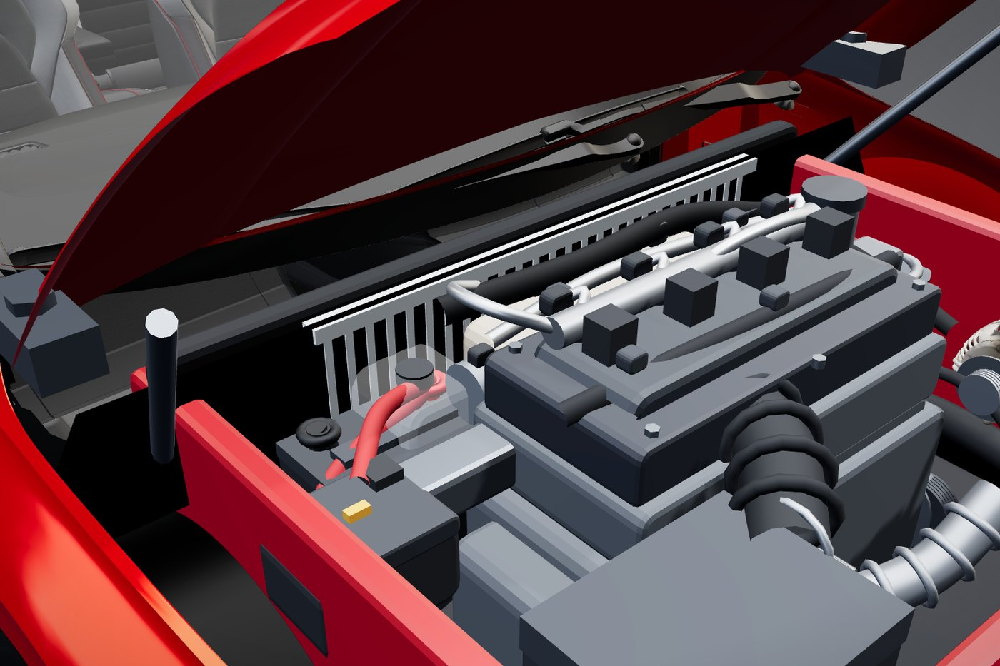
Negative post off first and secured so it cannot spring back onto the terminal; positive last. On refitting, the reverse: positive first, negative last. Taking the positive off first means that the moment your spanner touches any earthed metal — which on a car is nearly everything — it is carrying the full battery across it.
Starter motor — removal
A bench cutaway shows you how a starter works. Getting one off a car is a different skill, and on this job the thing that matters is not the mechanism — it is that cable.
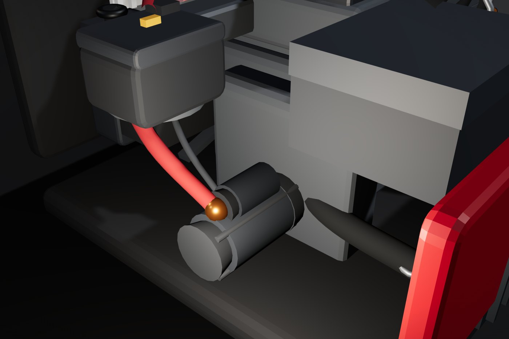
3.1Access
Nothing about a starter on a transverse engine is comfortable. It sits at the joint between engine and gearbox, the bodywork is in the way from the side, the engine is in the way from above, and the bumper is in the way from the front. Expect to work from below with the car raised and supported, and expect the awkwardness to be the job rather than a sign you are in the wrong place.
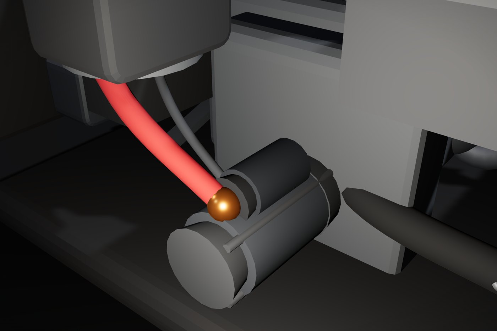
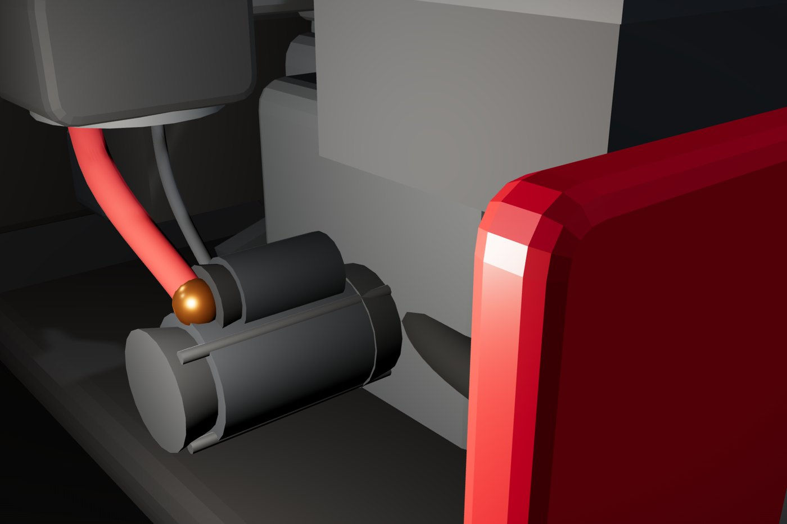
3.2Procedure
Look the job up. Where it sits, what holds it, and what that heavy cable is. The rest of this procedure assumes you know the answer to the third one.
Disconnect the battery. Negative post first, and secure the lead so it cannot spring back. This is not a precaution you can take later in the job — everything after this step is unsafe without it.
Support the starter. It is roughly three to five kilos, and on this layout it comes out above your face. Support it before it is loose, not after.
B+ cable off the stud. Slacken the nut, lift the cable clear of the block and insulate the end. Fold a rag over it or slip the boot back on — with the battery reconnected later, a loose live cable end resting on the block is the same short by a slower route.
Trigger wire off. The small spade terminal. It is thin, it has done twenty years of heat cycles, and it will tear out of its crimp if you pull it by the wire rather than the connector body.
Flange bolts out. Both bolts, with the motor supported. Take the upper one out first if you can reach it, so the weight stays on the lower bolt rather than on the cable you have just disconnected.
Withdraw the starter. It comes out along its own axis — the pinion nose has to clear the bellhousing before the body will drop.
The commonest way to get hurt here is to take the bolts out before the cables. A few kilos of starter then drops and hangs on a live main cable — which is both a short and a dropped component, at head height, on your face.
3.3Refitting
Bolts to torque. B+ nut tight with its insulating boot back over the stud. Trigger wire on. Battery last. If the engine now cranks but the starter whirs without turning it, the pinion is not engaging and the motor is out again — that is a drive fault, not a fitting error, but it is far easier to find before everything else goes back on.
| Fastener | Figure | Source |
|---|---|---|
| Starter flange bolt | — | Not established |
| Starter B+ terminal nut | — | Not established |
Charging system
The alternator is the only part of the car that pays its own way while the engine runs. Everything electrical is running off it, and the battery is a buffer, not a supply.

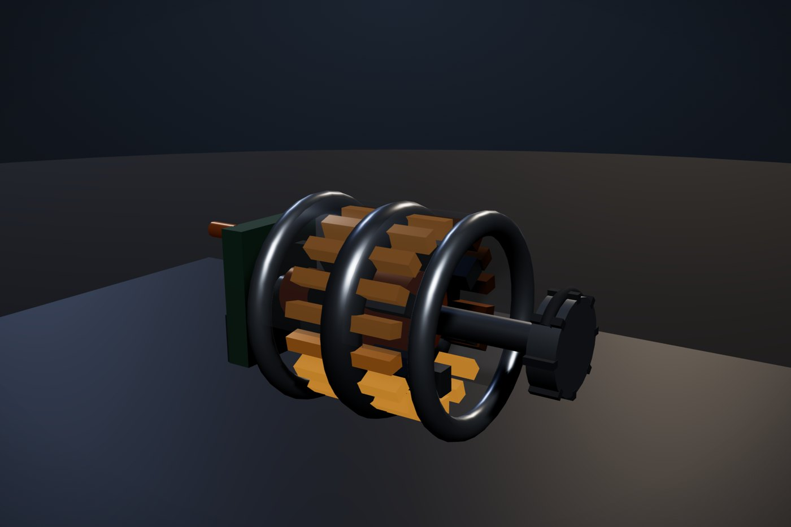
4.1How it makes DC
The rotor carries a field winding, fed through two slip rings and a pair of carbon brushes. Spin it and its magnetic field sweeps past three stator windings spaced a third of a turn apart, so each one produces an alternating voltage peaking 120° after the last. Six diodes then fold every half-cycle of all three into a single DC line.
Two things follow from that, and they are the whole of alternator diagnosis. First, the rotor makes no current — it only carries the magnetism, so worn brushes or an open field winding gives you a machine that spins happily and generates nothing. Second, because six diodes are each filling in part of the waveform, losing one leaves a gap: the DC line still looks roughly right on a meter, but the AC ripple riding on it jumps, and it reaches the battery.
4.2Testing at the battery
Engine off, meter on DC volts across the battery posts. A rested, healthy battery sits a little over 12 volts. Well under that and you are diagnosing a battery, not a charging system.
Start the engine and read the same two points. Charging, it should rise clearly above the rested figure. If it does not move, the alternator is not contributing.
Read the alternator's own output stud to earth. Same as the battery means the machine is making nothing. Higher than the battery by more than a few tenths means the output is being made but not arriving — that is a cable or a connection, not the alternator.
Switch to AC volts and read the output stud. This is the diode test. A healthy machine shows very little AC. A failed diode shows a clear AC component, and you will see a damped version of it at the battery too.
They are usually right, and it is not the point. An alternator that has stopped charging leaves the car running off the battery until it is flat, so the symptom a driver reports — dim lights at night, a warning lamp, a flat battery in the morning — is a battery symptom produced by a charging fault. Test the charging system before anyone buys a second battery.
Front brakes — pads and discs
The discs, calipers and hubs in these figures are the vehicle's own geometry.
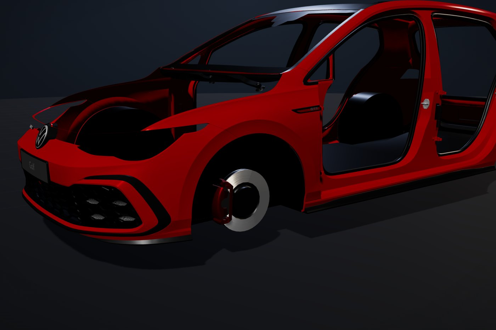
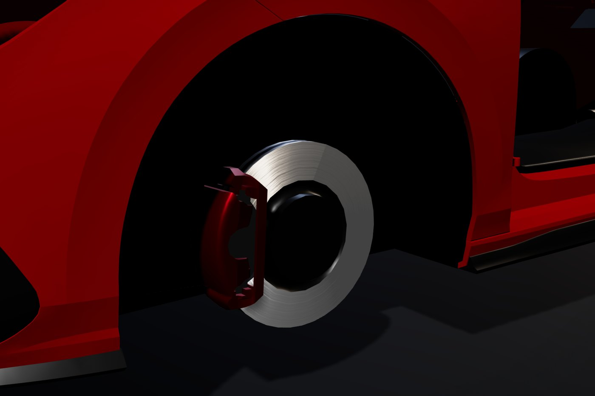
5.1Procedure
Slacken the wheel bolts while the car is on the ground. A wheel that is already in the air turns when you push on the bar.
Raise and support. Axle stands under the manufacturer's lifting points. A trolley jack is for lifting, never for holding.
Wheel off, then look before you touch anything. Hose condition, disc face, the inboard pad you cannot see with the wheel on, and any sign the caliper has been dragging on one side.
Caliper off and supported. Hang it from the spring with a hook or a tie — never leave it hanging on the flexible hose. The hose is a pressure part; stretching it under the weight of a caliper damages it from the inside where you cannot see the damage.
Wind or press the piston back. A rear caliper with an integral handbrake usually has to be wound rather than pressed, and forcing that one damages the mechanism. Watch the brake fluid level while you do it — the fluid has to go somewhere and it goes up the reservoir.
Fit the new pads. Grease only where the instructions for that caliper allow it, typically the slide points. Grease on the friction face destroys braking and must never reach the disc; some pad backs and shims are meant to stay dry.
Measure the disc. The minimum thickness is stamped on the hub. Measure with a micrometer at several points — a vernier reads the worn edge lip and lies to you. Under minimum, replace in axle pairs.
Caliper back on and torqued. These are small fasteners threading into aluminium and they strip easily. Use the torque wrench, not your wrist.
Wheel on, torque in a star. Start every bolt by hand so you cannot cross-thread one. Nip up in a star, lower the car, then torque in a star. Going round the circle can pull the wheel off-square as it seats.
Pump the pedal firm before the car moves. The piston is wound right back and the first press only takes up the gap.
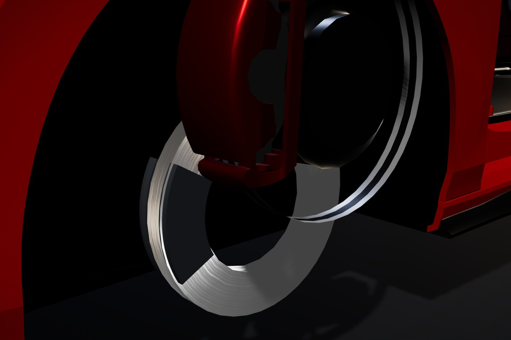
| Fastener | Figure | Source |
|---|---|---|
| Front caliper guide bolt | ≈ 30 Nm | Typical of class |
| Road wheel bolt | ≈ 120 Nm | Typical of class |
Door mirror and door lock
Both jobs are worth doing for the same reason: the fasteners are not where a first guess puts them.
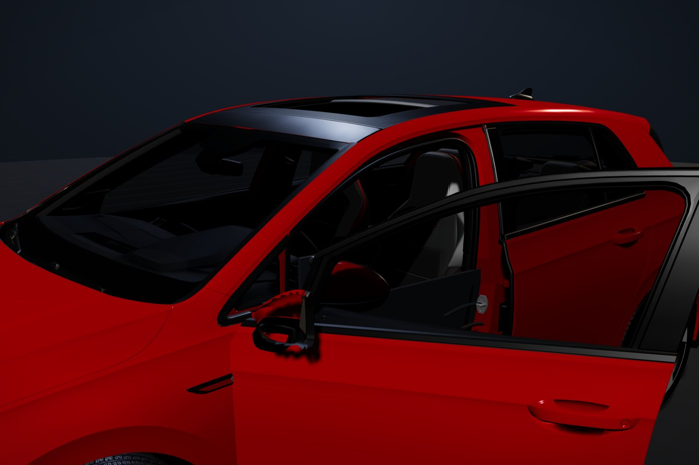
6.1Mirror
The mount nuts and the electrical connector are inside the door, behind the triangular trim at the front of the glass — not behind the mirror glass. Prising at the mirror glass to find fixings that are not there is how the glass and its heater element get broken, and on a car with power folding there is a motor behind it as well.
6.2Lock
The latch comes out through an access aperture in the door shell, which means the door card and the moisture barrier come off first. Release the interior handle cable and the exterior handle rod at the latch end, leaving the retainers intact, and unplug the central-locking connector before the latch screws come out.
The moisture barrier behind the door card is doing a job. Left unsealed or torn, water runs into the door and finds the speaker, the loom and the carpet. The job is not finished until the barrier is back and sealed, and until the door opens from inside and outside, locks and unlocks.
Steering wheel and SRS
The cabin in this figure is the vehicle's own — seats, dash, door cards, wheel and eight airbags, all real geometry.
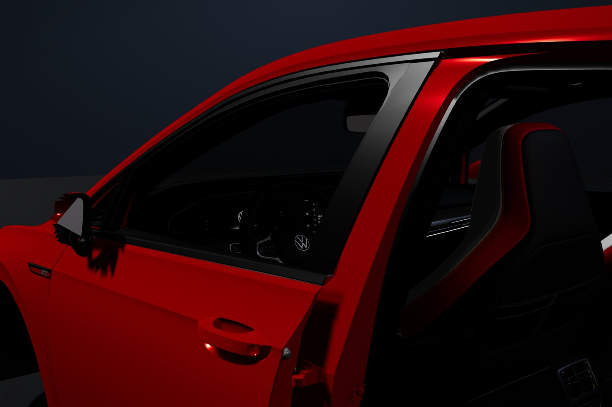
7.1Procedure
Look up the procedure, including the stand-down time for this vehicle. This is SRS work and the order is a safety procedure, not a convenience.
Isolate the battery and wait the stated time. See Section 00 for why the wait exists.
Centre the steering and lock it. The clock spring is a coiled ribbon cable that keeps the horn, the wheel controls and an SRS circuit connected while the wheel turns. With the wheel off it can rotate past its travel and tear, and you lose all of those at once — a fault code and a new part.
Release and remove the airbag module. Carry it face up and set it down face up. If a module does fire, one lying face-down launches itself off the bench; face-up, it inflates into the air.
Mark the wheel to the column before the centre bolt comes out. Splines let it go back in more than one position, and one spline out is a wheel that sits crooked on a straight road. That is not an alignment fault and you will not find it by chasing the alignment.
Centre bolt out, wheel off.
Yellow connectors are a useful hint that you are near SRS wiring, not a reliable way to identify every circuit. Whatever the colour: no ordinary multimeter across an igniter circuit, ever.
| Item | Figure | Source |
|---|---|---|
| Steering wheel centre bolt Often single-use, and often with an angle stage after the initial torque — both the reuse rule and the angle have to come from the data. | — | Not established |
| SRS stand-down time after isolating | — | Not established |
How the engine turns
Constructed cutaway, built to the real slider-crank geometry — the pistons and valves in the trainer are driven by the mechanism rather than by a looping animation.
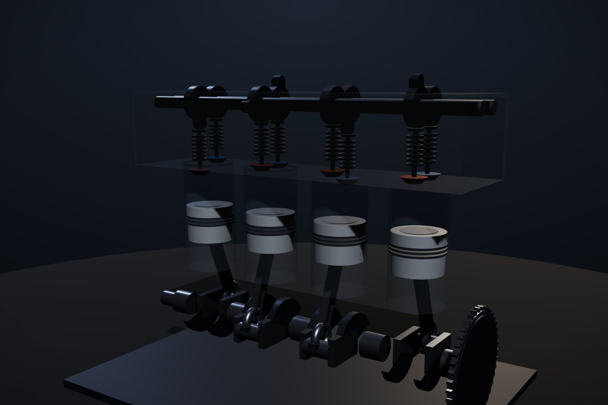
8.1The four strokes
Intake. Inlet valve open, piston travelling down, air drawn in. This engine injects its fuel straight into the cylinder at high pressure rather than mixing it on the way in, so the intake stroke draws air and the mixture is made in the cylinder.
Compression. Both valves shut, piston up, the charge squeezed into a fraction of its volume. That raises pressure and temperature so it burns fast and completely, which is where the efficiency comes from — a controlled quick burn, not a violent one. Detonation is the failure, not the aim.
Power. Spark near the top, the gas expands and drives the piston down. It is the only stroke in this cylinder that pays; the other three are carried by the flywheel's stored energy and by whichever other cylinder is firing.
Exhaust. Exhaust valve open, piston up, burnt gas pushed out.
8.2Three consequences worth knowing
Two crank turns per cycle, so the cams run at half crank speed. Get the cam timing wrong and a valve can still be open when a piston arrives. Timing is set to the marks and checked — never eyeballed.
Firing order 1-3-4-2. Pistons 1 and 4 rise and fall together, as do 2 and 3, but each pair sits 360° apart in the cycle — so when one is firing, its twin is drawing in. That is what spreads the power pulses evenly and stops the engine shaking itself apart.
Valve overlap. Near the top of the exhaust stroke both valves are briefly open at once. The outgoing exhaust helps pull the next charge in, which is a large part of why an engine breathes better at some speeds than others.
Part numbers
From our own parts data rather than the manufacturer's system. The prefix carries the generation, and it is the first thing to check: a part that fits the shape can still be for a different car.
| Part | Number | Years | Fits |
|---|---|---|---|
| Bonnet | 5H0 823 031 | 2019–2026 | This generation |
| Front wing, left | 5H0 953 051 | 2019–2026 | This generation |
| Front wing, right | 5H0 953 052 | 2019–2026 | This generation |
| Front bumper cover | 5H0 807 221 | 2019–2026 | This generation |
| Headlight, left | 5H0 941 005 | 2019–2026 | This generation |
| Headlight, right | 5H0 941 006 | 2019–2026 | This generation |
| Radiator | 5H0 121 253 | 2019–2026 | This generation |
| Part | Number | Years | Fits |
|---|---|---|---|
| Front brake pad set, GTI | 5G0 698 151 B | 2013–2020 | Mk7 |
| Front discs, vented 312 mm | 5Q0 615 301 H | 2012–2022 | Mk7 |
| Front door lock mechanism, right | 5K0 837 016 F | 2008–2013 | Earlier Golf |
| Door mirror, left | 1K1 857 507 C | 2003–2014 | Earlier Golf |
The newest front pad set our parts data holds for a Golf GTI is a Mk7 part. It is printed here as the nearest match so you can see what the family looks like — it is not the answer for the car in front of you, and the table says so rather than quietly letting it pass as the answer. Check any number against the VIN before ordering.
For the Mk5 the data is a different story — it reaches the starter, the alternator, both axles' brakes, the door lock, the mirrors and the window motors, all with real numbers. That car has its own page: Appendix A.
Figures still to be established
This is the honest list. Every row is a number a trainee could act on, that this manual does not have, and that has deliberately not been filled with a plausible guess.
| Item | Section | Status |
|---|---|---|
| Starter flange bolt torque | 03 | Not established |
| Starter B+ terminal nut torque | 03 | Not established |
| Alternator pulley nut torque | 04 | Not established |
| Bonnet hinge bolt torque | 02 | Not established |
| Steering wheel centre bolt torque and angle | 07 | Not established |
| SRS stand-down time | 07 | Not established |
| Front caliper guide bolt torque | 05 | Typical of class only |
| Road wheel bolt torque | 05 | Typical of class only |
The parts database behind Section 09 is a parts catalogue and holds no torque data. The separate guide database was searched for torque figures in its free text rather than just its schema, and it does hold seven: lug nuts at 85 lb-ft on a Volvo 240, 100 lb-ft on a Dodge Journey, a spark-plug cover at 18 lb-ft on a Chevrolet Malibu and four more of the same kind. Not one of them is a Volkswagen, so the table above stands — but it stands on a search that was actually run, rather than on an assumption about what the schema implied.
Filling this table needs the vehicle data. When it arrives each row becomes a figure with Workshop data against it.
Golf Mk5 parts reference
The Mk8 is the car in the illustrations. The Mk5 — type 1K, 2003 to 2009 — is the car our parts data actually covers, job for job, with real numbers rather than near misses. If you are working on one, this is the page you want.
Every figure in Sections 01 to 08 is a Mk8. A Mk5 shares the general layout — same marque, same transverse four, the same order of work on every job in this manual — but it is not the same car, and nothing here should be read as a picture of one. The part numbers below are Mk5. The pictures above are not.
A.1Why this generation and not the Mk8
VW's prefix tells you the generation, and once you sort our parts data by prefix the picture is plain: the 1K family is the deepest seam in it. The Mk8 rows we hold are body panels and little else, so the Mk8 brake and door entries in Section 09 are near misses from a Mk7. For the Mk5 the data reaches the components the jobs in this manual are actually about — the starter, the alternator, both axles' brakes, the door lock, the mirrors and the window motors.
| Part | Number | Years | Note |
|---|---|---|---|
| Starter motor | 02T 911 024 E | 2003–2014 | Numbered by gearbox family, not engine |
| Alternator | 06F 903 023 C | 2003–2014 | Petrol |
| Alternator, 140 A | 03L 903 023 A | 2008–2016 | 2.0 TDI |
| Part | Number | Years | Note |
|---|---|---|---|
| Front pad set | 1K0 698 151 G | 2003–2013 | |
| Front pad set, alternative | 1K0 698 151 E | 2003–2013 | |
| Rear pad set | 1K0 698 451 G | 2003–2013 | |
| Front disc, 288 mm | 1K0 615 301 R | 2003–2012 | Check which disc size the car was built with |
| Front discs, vented 312 mm, pair | 1K0 615 301 AA | 2004–2013 | GTI and heavier variants |
| Front disc — Febi | 1K0 615 301 AQ | — | Aftermarket, listed for Golf V |
| Rear disc — Febi | 1K0 615 601 AJ | — | Aftermarket |
The Mk5 was built with more than one front disc diameter, and the pads differ with them. Measure the disc or check the build data before ordering — a 288 mm set will not go on a 312 mm car, and finding that out with the caliper already off is a wasted afternoon.
| Part | Number | Years | Note |
|---|---|---|---|
| Front door lock mechanism, right | 1K0 837 016 G | 2003–2012 | |
| Door mirror, left | 1K1 857 507 C | 2003–2014 | |
| Door mirror, right | 1K1 857 508 C | 2003–2014 | |
| Window motor, front left | 1K0 959 701 C | 2003–2014 | |
| Window motor, front right | 1K0 959 702 C | 2003–2014 | |
| Window motor, rear left | 1K0 959 703 C | 2003–2014 | |
| Window motor, rear right | 1K0 959 704 C | 2003–2014 | |
| Steering rack | 1K1 423 055 ES | 2003–2014 | |
| Indicator / multifunction stalk | 1K9 953 505 E | 2004–2015 |
| Part | Number | Years | Note |
|---|---|---|---|
| Rear bumper cover | 1K6 807 421 A | 2003–2014 | Variant B also listed |
| Intercooler | 1K0 145 803 D | 2003–2014 | Turbo variants |
A.2What was thrown out, and why
Four rows in the parts data that would have landed on this page were left off it. They carry numbers of the form 1K0000014P, 1K0000026E, 1K0000003C and 03C000017C — a bonnet, two calipers and a crankshaft. The prefix is right but what follows it matches no VW numbering pattern, every one of them has no brand recorded, and they all come from the same "curated" batch. One of them is stamped 2020–2026 on a 1K prefix, which cannot be true of any car.
They look generated rather than catalogued. A part number that looks real and is not is worse than a blank, because a blank sends you to look it up and a plausible wrong number sends you to the parts counter.
Everything on this page is a part number. The database behind it is a parts catalogue and holds no torque data for any generation, so Section 10's open list applies to the Mk5 exactly as it does to the Mk8. Nothing in this appendix tells you how tight anything goes.